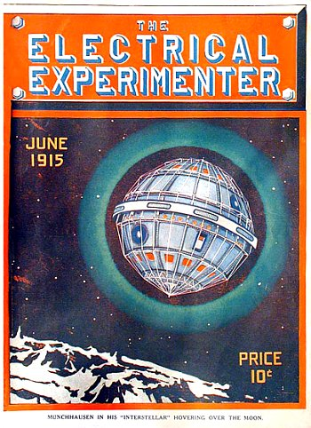

A l'ouest de Martinsburg (New York?), par un temps orageux,
plusieurs personnes voient un vaisseau aérien survoler les environs "West Road: W. Martinsburg", Journal
& Republican de Lowville (New York), 7 janvier 1915.
Lucia (8 ans), est en train de dire son chapelet près de Fatima lorsqu'elle voit un nuage blanc,
translucide, et une forme humaine. Cela se reproduira une 2ème fois, puis une 3ème en octobre.
Eté
Couverture de The Electrical Experimenter n° 26 de juin Klotz,
Jim < UFOPOP

A Østre Slidre (Norvège), 4 femmes
visiteuses arrivent de l'hôtel Fredheim vers le Nord sur la route principale, et se trouvent à la ferme de
Valsted lorsqu'elles entendent soudain le fort bruit d'un moteur, pensant qu'une automobile approche. Elles
s'éloignent du passage attendant l'arrivée de la voiture, mais sont surprises de ne pas voir de voiture ; en
fait les 2 femmes qui sont un peu en avant par rapport aux autres voient un avion foncer vers elles en
direction du Nord. Une femme d'officier, qui voit la machine, est certaine de ne pouvoir s'être trompée et
qu'il s'agissait d'un avion, ayant souvent vu des avions en vol. Cependant alors que les femmes observent la
machine depuis un court moment le moteur s'arrête et la machine tombe comme la foudre dans une trajectoire
inclinée, pointant vers Volhufjorden. Elle voit tout cela très clairement, et son impression est que la
machine et l'aviateur sont sur le point de se détruire. Le sheriff de Østre Slidre est immédiatement
averti de l'événement et avec 4 autres personnes mène une enquête à Skogene hors de Rognagårdene
directement dans le fjord, sans découvrir le moindre élément. Des hommes sont postés sur les deux côtés du
fjord tandis que tout Volbufjorden est passé au peigne fin dans toutes les directions. Dans une interview,
le sheriff de Østre Slidre indique qu'aucune trace du mystérieux avion n'a pu être trouvée (encore
une fois la femme de l'officier est interrogée), bien qu'elle fut certaine que ce qu'elle vit était un
avion, et qu'elle semblait totalement sincère Valdres, juillet 1915Morgenbladet, 16 juillet 1915, 4Bullard, Thomas E.: The
Airship File, Supplément
1, 1983, 40.
À Christianiafjord (Norvège) the
time lacking 20 mn of 10 - lorsque le violent orage arriva sur le fjord et Østlandet, un homme reste
devant la fenêtre de sa maison et regarde en direction du Sud-Est au-dessus du fjord. Soudain il voit un
objet sombre apparaître devant l'horizon éclairé, loin devant en direction de Rauer. Ce qu'il pense tout
d'abord être un petit nuage sombre se déplace dans le ciel avec une vitesse inhabituelle pour un nuage, le
convaincant qu'il doit s'agir d'autre chose. Il prend son télescope (jumelles) et sort dehors dans son
jardin. Il se tourne dans dans la direction où selon lui se trouve l'objet sombre et - c'est sûr - le plus
beau des Zeppelin (en pleine puissance) flotte au-dessus de Christianiafjord. Alors qu'il reste à l'observer
avec le télescope il parvient à voir une lumière brillante émise du centre du grand corps ; elle brille
intensément durant 1 mn environ et il s'en va. Juste après il peu voir le vaisseau tourner et s'en aller en
flottant au loin vers le Sud et disparaître peu après dans l'obscurité Gjenganeren, août 1915Morgenbladet,
25 août 1915, 4Bullard, Thomas E.: The
Airship File, Supplément 1, 1983, 42.
Sam 21 Expédition des Dardanelles : les troupes alliées combattent les Turcs
dans la péninsule de Gallipoli (Turquie). Le sapeur Reichart, appartenant à la 3ème section de la 1ère
compagnie de génie Néo-Zélandais, originaire de Matada (district de Bay of Plenty), observe ainsi que 2
autres témoins un phénomène inexpliqué : durant les sévères combats un étrange nuage a englouti un régiment britannique
que l'on ne revit jamais. Ceci fut observé par 22 hommes de la 1ère compagnie de campagne, N.Z.
corps d'armée, et ils témoignèrent sous serment Spacewiew
45.
A Sulitjelma (Norvège), un objet sombre en forme de cloche descend du ciel de
l'Ouest et atterri. 2 humanoïdes apparaissent de derrière la colline où l'objet a atterri. Ils marchent vers une
route, puis tournent autour, et arrivent vers le témoin. 1 des humanoïdes s'arrête et sourit au témoin, Bjarne
Westvand. L'humanoïde est aussi grand que le témoin, qui a 6 ans, c'est-à-dire mesure 1 m de haut. Il a de longs
cheveux sombres ondulés. La peu est grise, et sa tête est grande en comparaison de son corps. Ils sont habillés
de combinaisons marron/sombres. Les humanoïdes se rendent derrière la colline, et peu après, l'objet en forme de
cloche s'élève et disparaît rapidement dans le ciel Rapportnytt, 4/1981, 3.
Automne
Lucia observe un phénomène analogue à celui d'avril.
Lun 18 Un postier voit et entend une machine volante "Sees An Airship", Courier
Freeman de Potsdam (New York), 27 octobre 1915.
Couverture de The Electrical Experimenter n° 32 de décembre Klotz, Jim < UFOPOP
(ou 1914) Dans le village de Bujoreanca (Roumanie), un enseignant mangeant avec sa
famille dans le jardin quand l'attention de tout le monde est attirée par un objet d'une lueur rougeâtre qui
apparaît lorsqu'il commence à faire sombre. L'objet est de la taille d'un ballon de football ou de la tête d'un
homme avec une nuque protubérante, comme un pot d'échappement. Il est à 20 ou 25 m en l'air et semblent se
déplacer facilement, faisant pencher les acacias et les chênes de par le vent qu'il crée. Il laisse derrière lui
une traînée d'étincelles luisantes de 8 ou 10 m de long et réappaîtra à nouveau les 6 ou 7 jours qui suivent
devant les yeux de tous les villageois. L'objet faisait un bruit de sifflement et apparaissait à partir de
rien au-dessus d'une maison particulière à 800 m d'où vivait le témoin, et disparaissait soudainement
au-dessus d'une autre résidence. Une fois, il resta stationnaire au-dessus d'une des maisons où le corps d'une
femme fut trouvé, apparemment couvert de brûlures D.
S. Ionescu.
À Bergen (Norvège), Henr. Angel Hansen voit un
grand objet brillant par 2 fois, aussi grand que la Lune, vers le Nord. Il ne bouge pas durant ,
puis descend un peu, faisant une pause à nouveau pendant environ. La même action est répétée 2-3
fois. Finalement il accélère et part au loin pour disparaître dans l'horizon vers l'ouest. La couleur de l'objet
était marron-rouge et le temps était clair UFO-NYT, 3/1972, 118.
{kind=link}

{kind=link}